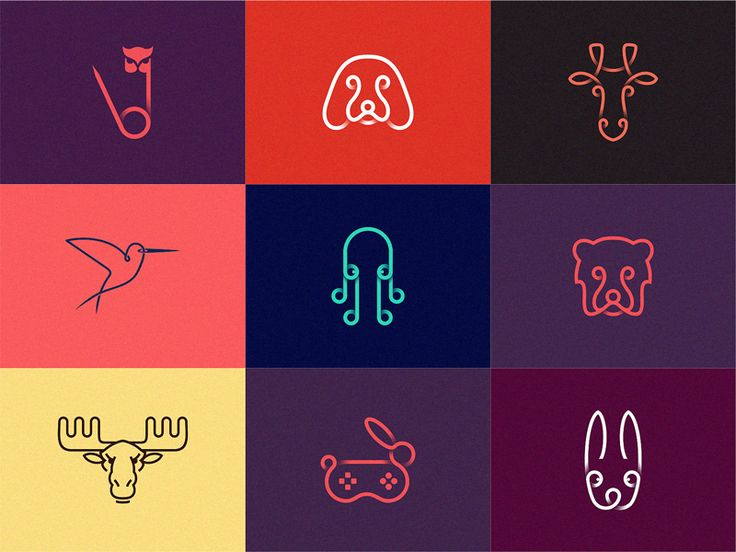

Skills and Qualifications
EDUCATION
Diploma: Computer Programming
Algonquin College Ottawa, ON Canada. 2023 – Present.
- Dean's Honours List – GPA 3.67/4.0.
- Courses include Object-Oriented Programming (Java),
Database (SQL), Operating Systems (Windows, Linux),
Web Programming (HTML, CSS, JavaScript, PHP), Technical Writing.
TECHNICAL SKILLS
- Programming Languages: Adept in Java, with knowledge of applying design patterns and object-oriented programming principles.
knowledge of SQL for managing databases. - Operating Systems: Capable of working with a variety of operating systems, such as Windows 7, Windows 8, Windows 10, Ubuntu, and Linux.
- Web Programming: Understanding of HTML, CSS, PHP, and JavaScript, enabling the development and customization of web-based applications
- Software knowledge:
- Competent in using integrated development environments (IDEs) like Eclipse, Visual Studio, and IntelliJ.
- Knowledge of database programs like MySQL, Oracle, MS Access, and MS SQL Server.
- Capable of using Microsoft Office products like Word, Excel, PowerPoint, Access, and Project.
- Additional Tools: Photoshop, VMWare, WordPress
- Familiar with Photoshop for basic image editing and manipulation.
- Capable of managing virtual machines effectively using VMWare.
- Understanding of using WordPress for website development and content management.
ACADEMIC PROJECTS
BMI Calculation Program: Developed a program using Java to calculate Body Mass Index (BMI) based on user input.

Spotify Database: Designed and developed a simple database system for Spotify using SQL Server as the backend and MS Access as the frontend.

Web Pages: Developed fully functional webpages using HTML and CSS, incorporating interactive forms and flex-boxes for enhanced user experience.
-
I have developed a web page that introduces my hometown and showcases its unique characteristics.
I also created a separate page called 'Table' with information on five animal species found in my country.
 -
I have developed a web page that incorporates a user-friendly form, enabling users to input and submit information conveniently.
-
I created a flexbox layout on one webpage and another webpage to showcase the history of CSS programming language.
WORK EXPERIENCE
Airlines Reservation Agent
Sep 2022 - Present.
WestJet Airlines,Ottawa, ON Canada.
- Streamlined processes and improved efficiency by leveraging tools such as World Tracer, Sabre-sonic, and Gate Event Tracker.
- Utilized programming knowledge to customize and enhance these tools, resulting in better performance and automation of tasks.
- Demonstrated proficiency in handling and managing large volumes of data related to flight bookings, passenger information, and baggage.
- Conducted data analysis and generated insightful reports for management, utilizing programming languages and tools for data manipulation and analysis.
- Utilized analytical and organizational skills to effectively resolve flight delays, disruptions, and lost baggage cases.
- Expertly rebooked passengers on alternative flights during delays, showcasing problem-solving abilities and quick decision-making.
- Created and managed files for lost bags, tracking deliveries and ensuring timely resolution.
- Highlighted technical proficiency through expertise in programming languages such as Java, and SQL,
as well as proficiency in tools like World Tracer, Sabre-sonic, and Gate Event Tracker. - Engaged in programming-related projects, effectively applying skills to real-world scenarios, and achieving desired outcomes.
REFERENCES
- Marenda Douglas
English Language and Literature Professor - CLLC Ottawa.
Tel: 613-276-8914
Email: douglas.marenda89@gmail.com -
Abed Renjba
Supervisor - WestJet Airlines.
Tel: 613-981-9590
Email: abed.renjbal@wearegat.net -
Hala Own
Professor Web Programming – Algonquin College.
Email: kaurh6@algonquincollege.com